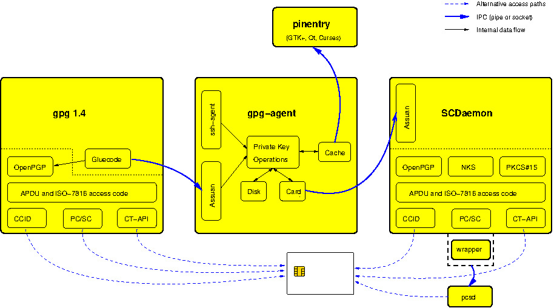

Evaluación de compresión HTTP
Este sitio fue creado para evaluar el comportamiento de Apache al servir diferentes tipos de recursos y observar cuáles presentan una alta, baja o nula compresibilidad.
Los recursos utilizados incluyen HTML, CSS, JavaScript, JSON, XML, SVG, texto plano, imágenes y archivos binarios.
Recursos multimedia
Imagen JPEG

Formato JPEG. Se utiliza para comprobar el comportamiento de la compresión sobre imágenes que ya utilizan compresión.
Imagen PNG
Formato PNG. Se utiliza como recurso multimedia para las pruebas de compresión.
Gráfico SVG
Formato SVG. Al ser XML basado en texto, presenta alta compresibilidad.
Datos y documentos
Estos archivos permiten comprobar cómo Apache sirve diferentes recursos basados en texto.
Archivos binarios
Los archivos multimedia y comprimidos se utilizan para comprobar recursos donde aplicar compresión HTTP adicional normalmente no representa una ventaja.
Recursos utilizados para las pruebas
Los siguientes archivos fueron preparados para evaluar la compresión de Apache según el tipo de contenido.
| Tipo | Recurso | Comportamiento esperado |
|---|---|---|
| HTML | index.html | Alta compresibilidad |
| CSS | styles.css / styles-min.css | Alta compresibilidad |
| JavaScript | app.js | Alta compresibilidad |
| JSON | datos.json | Muy alta compresibilidad |
| XML | datos.xml | Alta compresibilidad |
| Texto | texto.txt | Muy alta compresibilidad |
| JPEG / PNG | imagen.jpg / imagen.png | Nulo o negativo |
| Video / ZIP | video.mp4 / paquete.zip , | Nulo o negativo |
Estado del sitio
Comprobando funcionamiento de JavaScript...